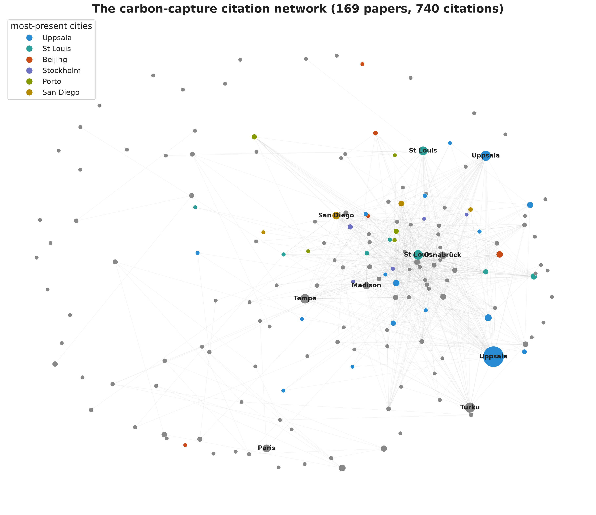
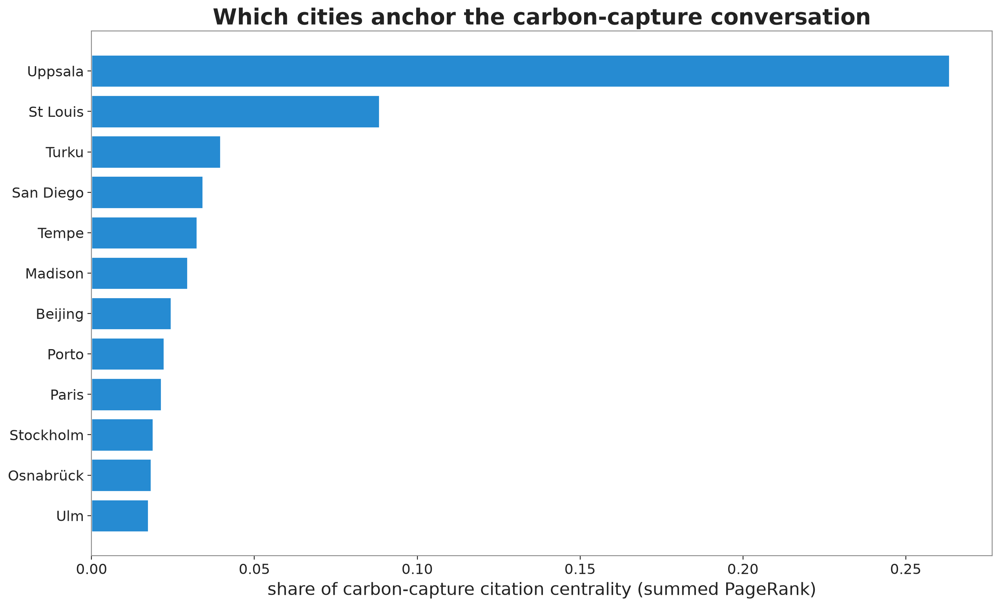
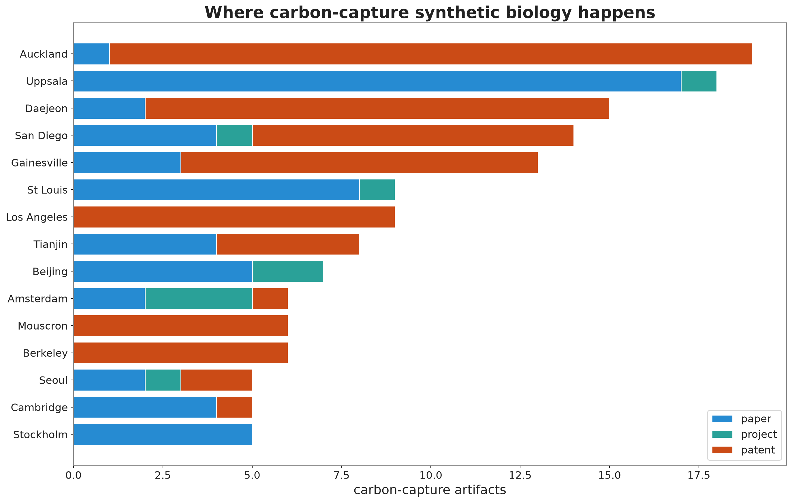

Case study: carbon capture
The Results are about relatedness across the whole field. This page narrows to one subfield and one set of cities: engineering microbes to pull carbon dioxide out of the air and turn it into fuel. Carbon capture is the case study threaded through the project because it is where the general method lands on something concrete, and because it is the proof that synthetic biology’s pen can heal as well as harm.
Three clusters, one ladder
The carbon-capture work concentrates in three adjacent clusters on the map, and together they trace the exact arc the project is about.
| Cluster | Topic | Documents | Dominated by |
|---|---|---|---|
| 7 | Cyanobacterial Metabolic Engineering | 58 | student projects (48) |
| 8 | Cyanobacterial Chassis Development | 135 | papers (120) |
| 62 | Industrial Fermentation | 259 | patents (211) |
Cluster 7 is where the students work, the descendants of Uppsala’s Booze Bugs among them. Its near neighbor, cluster 8, is the academic literature on engineering these organisms. Cluster 62 is the commercial work on turning waste gases into fuels and chemicals. Student projects, academic papers, and patents, sitting in three tight adjacent clusters, arranged almost exactly along the project-to-paper-to-patent path. A city that appears across all three is one where the full chain, from student education to academic research to commercial filing, has taken root around a single theme. Those are the cities the policy question is really about.
The alignment holds inside the subfield
Before asking which cities lead, it is worth checking that the field-wide result applies here specifically. If carbon capture were an unusual corner of the data, its local alignment could behave differently. We ran the project-level alignment test on the carbon-capture projects, comparing each to same-cluster papers in its own city against same-cluster papers elsewhere. The alignment is as strong as the field-wide one: mean \(\bar\delta_{CC} = +0.0140\), with 90.1% of carbon-capture projects showing positive local alignment (\(t = 9.50\), clustered by city). The pattern is not something that dilutes when we zoom in on the case study; it is at least as pronounced within carbon capture as across the whole corpus.
The network and its centres
To see the structure, we build a network of the carbon-capture artifacts. Nodes are the projects, papers, and patents in the three clusters; edges are the concrete links recovered while building the corpus, a project citing a paper, a paper naming a BioBrick, a patent paired with a paper it builds on. The result is not an even mesh. It has a backbone of well-connected documents surrounded by more loosely attached ones, and the cyanobacteria work forms a visibly distinct, tightly linked region.

A network lets us ask which cities are central in a precise sense: how well-connected a city’s carbon-capture work is to everyone else’s, not just how much of it there is. Volume and centrality usually travel together but not always, and the cities that score high are the ones whose output is both substantial and wired into the rest. A small group of cyanobacteria-focused cities dominates.

Where cyanobacterial carbon capture has taken root
Counting artifacts across the three clusters gives a leaderboard of cities, and the top of it is telling.
| City | Carbon-capture artifacts |
|---|---|
| Auckland | 19 |
| Uppsala | 18 |
| Daejeon | 15 |
| San Diego | 14 |
| Gainesville | 13 |
| Los Angeles | 9 |
| St Louis | 9 |
| Tianjin | 8 |
Auckland and Uppsala lead, the two cities most heavily invested in engineering cyanobacteria to turn light and carbon dioxide into fuel, exactly the line of work Booze Bugs began in 2009. Behind them come Daejeon, San Diego, and Gainesville, each a known centre of microbial and algal biotechnology. This is not a ranking of who does carbon capture best. It is a map of where this specific line of synthetic biology has taken root across student, academic, and commercial work at once, assembled from the bottom up out of thousands of individual documents, without anyone deciding in advance which cities mattered. If a policymaker asked where to look for cyanobacterial carbon capture, this table is a defensible first answer.

The story that began with one iGEM team in Uppsala turning sunlight into alcohol ends here, as a map of the cities where students, academics, and inventors are all working on the same idea at once. To search these cities yourself, and to filter to the carbon-capture subset directly, use the Explorer.